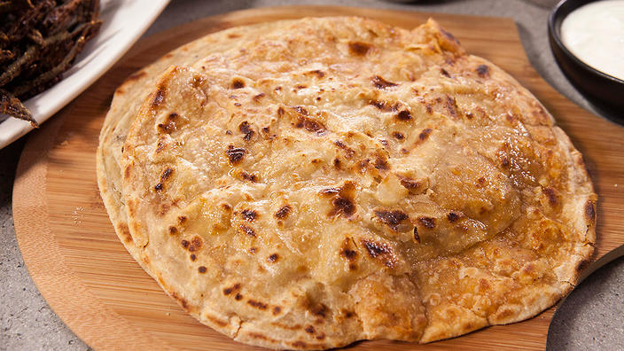

Parantha Recipie

Description
Paratha is a flaky, layered flatbread made from whole wheat flour and ghee.
It is a popular breakfast food in India and Pakistan, and is often served with curry or dal.
Ingredients:
- 2 cups whole wheat flour (atta)
- 1 teaspoon salt
- 1/2 cup water
- Ghee or oil, for cooking
Steps:
- In a large bowl, combine the flour and salt.
- Add the water and mix until a dough forms.
- Knead the dough for 10-15 minutes, until it is smooth and elastic.
- Cover the dough with a damp cloth and let it rest for 30 minutes.
- After 30 minutes, divide the dough into 12 equal pieces.
- Roll out each piece of dough into a thin circle.
- Spread a thin layer of ghee or oil on each circle of dough.
- Fold each circle of dough in half, then in half again.
- Roll out each folded circle of dough into a thin circle again.
- Heat a griddle or frying pan over medium heat.
- Cook each paratha for 2-3 minutes per side, or until it is golden brown and cooked through.
- Serve hot with your favorite curry or dal.
Back to Home Page